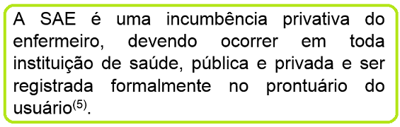

Objetivo de aprendizagem: Identificar os aspectos históricos e ético-legais que envolvem a SAE.
Desde quando se fala em SAE?
Existe uma legislação no Brasil específica sobre este tema?
O surgimento da enfermagem, associado à iniciativa das práticas de Florence Nightingale, trouxe, como componente essencial dessa profissão, o cuidado.
A preocupação com o saber científico da enfermagem já estava presente em seu surgimento, pois Florence já defendia uma profissão embasada em questionamentos, o que requeria conhecimentos diferentes da medicina(1-2).
Florence, portanto, já defendia alguns dos princípios da SAE, em busca dos muitos benefícios que este instrumento pode proporcionar à enfermagem. Assista a este vídeo e tente reconhecer nas ideias de Florence Nightingale os elementos que integram o conceito da SAE!
Conseguiu identificar? Pois é, a SAE é reconhecida atualmente como o principal método para alcançarmos a enfermagem profissional.Conseguiu identificar? Pois é, a SAE é reconhecida atualmente como o principal método para alcançarmos a enfermagem profissional.
No contexto brasileiro, podemos referenciar alguns marcos fundamentais que contribuíram na luta para a defesa e efetivação da enfermagem enquanto ciência do cuidar, o que, vale ressaltar, constitui um processo ainda presente nos dias atuais, em que se busca, cada vez mais, subsídios que afirmem a teoria na prática cotidiana dos seus profissionais.
Inicialmente, a precursora dessa discussão no panorama brasileiro foi Wanda Aguiar Horta, na segunda metade dos anos de 1960, sendo ela a primeira enfermeira brasileira a falar de teoria no campo profissional.

Posteriormente, merece destaque, no Brasil, a década de 1980, quando, em 1986, por meio da Lei nº 7498, o exercício profissional da enfermagem é regulamentado, apresentando como atividades privativas do enfermeiro a Consulta e a Prescrição de Enfermagem.
Nesse documento, são estabelecidas as categorias profissionais componentes da enfermagem, a saber: enfermeiro, técnico de enfermagem, auxiliar de enfermagem e parteira, respeitados os respectivos graus de habilitação(4).
Em 2002, em mais uma tentativa de reafirmação da enfermagem como ciência do cuidado, o Conselho Federal de Enfermagem (COFEN) apresentou a Resolução nº 272, determinando que:
Em 2009, o COFEN desenvolveu a Resolução nº 358, reafirmando o processo de enfermagem (PE) – discutiremos ainda a diferença entre SAE e PE – como um meio de evidenciar a contribuição da enfermagem na atenção à saúde da população, aumentando, assim, o reconhecimento profissional do enfermeiro(6).
A Resolução nº 358 substitui a anterior e aponta, ainda, a participação do Técnico de Enfermagem na SAE, profissional que, até então, não havia sido citado diretamente nas legislações brasileiras como componente fundamental na operacionalização da SAE.
Vamos conferir, então, um resumo das principais legislações nacionais que embasam a SAE:


De maneira geral, pode-se constatar que o empenho pela consolidação da enfermagem enquanto profissão de base científica vem se intensificando no decorrer da história brasileira, notadamente com a defesa de que a SAE se constitui uma estratégia ímpar para a consecução dessa premissa.
Essa luta é decorrente de trabalhos intensos tanto do Conselho Federal de Enfermagem quanto da Associação Brasileira de Enfermagem (ABEn), que desde a sua criação está comprometida com a educação e a assistência de enfermagem.
Todavia, mesmo diante das incontestáveis vantagens trazidas pela adoção da SAE, a literatura é unânime em afirmar que sua implementação ainda se caracteriza como um desafio, destacando-se como dificuldades a serem superadas(7-15):

Além disso, merecem destaque os conflitos de conhecimento ainda vivenciados pelos profissionais de enfermagem, fragmentando assim as etapas componentes do PE e, muitas vezes, entendendo ser o registro das ações realizadas sinônimo de SAE.
Diante disso, muitos estudos apresentam possibilidades de melhoria para a real consolidação da SAE em nosso cenário(8-15), enfatizando:
- A necessária formação acadêmica qualificada;
- A essencialidade da definição de papéis e de responsabilidades de todos os integrantes da equipe de enfermagem;
- O uso de roteiros facilitadores; e
- A inclusão do tema nas escolas de formação de técnicos de enfermagem.
Em resumo, constata-se que a SAE se configura como uma ferramenta capaz de proporcionar um cuidado individualizado, humanizado e resolutivo, melhorando, assim, a qualidade assistencial e ampliando a autonomia da enfermagem e a comunicação interdisciplinar.
Entretanto, inúmeros desafios ainda são visualizados para que tal método seja consolidado por todos.
Destaca-se, nesse processo, a integração do profissional técnico de enfermagem, sujeito em contato contínuo com o usuário, capaz de contribuir imensamente para a efetivação da SAE.


Que tal refletir um pouco sobre as dificuldades de operacionalização da SAE e como enfrentá-las?
A proposta é que você construa uma História em Quadrinhos (HQ) que destaque o seu aprendizado sobre esses dois elementos.
Sugere-se que a HQ represente um diálogo entre profissionais de enfermagem, em que os desafios sejam apontados e os meios de enfrentamento em prol da consolidação da SAE.
Segue abaixo uma dica de site que poderá auxiliá-lo nessa reflexão:
Pixton
Bom aprendizado!
Referências
- Tannure MC, Gonçalves AMP. Sistematização da Assistência de Enfermagem – Guia Prático. Rio de Janeiro, RJ: Guanabara Koogan; 2006.
- Nascimento KC, Backes DS, Koerich MS, Erdmann AL. Sistematização da assistência de enfermagem: vislumbrando um cuidado interativo, complementar e multiprofissional. Rev Esc Enferm USP. 2008; 42(4):643-8.
- Nóbrega MML, Silva KL. Fundamentos do cuidar em Enfermagem. 2ª ed. Belo Horizonte, MG: ABEN; 2009.
- Brasil. Lei No 7.498, de 25 de junho de 1986. Dispõe sobre a regulamentação do exercício da Enfermagem e dá outras providências. Diário Oficial da República Federativa do Brasil, 26 Jun 1986. Seção 1.
- Conselho Federal de Enfermagem. Enfermagem em Dados [online]. 2011 [acesso em 2013 Jun 29]. Disponível em: http://novo.portalcofen.gov.br/planejamento-estrategico-2
- Conselho Federal de Enfermagem. Resolução n. 358, de 15 de outubro de 2009. Dispõe sobre a Sistematização da Assistência de Enfermagem e a implementação do Processo de Enfermagem em ambientes, públicos ou privados, em que ocorre o cuidado profissional de Enfermagem, e dá outras providências. Brasília (DF): COFEN; 2009.
- Andrade JS, Vieira MJ. Prática assistencial de enfermagem: problemas, perspectivas e necessidade de sistematização. Rev Bras Enferm. 2005; 58(3):261-5.
- Figueiredo RM, Zem-Mascarenhas SH, Napoleão AA, Camargo AB. Caracterização da produção do conhecimento sobre sistematização da assistência de enfermagem no Brasil. Rev Esc Enferm USP. 2006; 40(2):299-303.
- França FCV, Kawaguchi IAL, Silva EP, Abrão GA, Uemura H, Alfonso LM, et al. Implementação do diagnóstico de enfermagem na unidade de terapia intensiva e os dificultadores para enfermagem – relato de experiência. Rev Eletr Enf. 2007; 9(2).
- Fuly PSC, Leite JL, Lima SBS. Correntes de pensamento nacionais sobre sistematização da assistência de enfermagem. Rev Bras Enferm. 2008; 61(6):883-7.
- Gonçalves LRR, Nery IS, Nogueira LT, Bonfim ES. O desafio de implantar a sistematização da assistência de enfermagem sob a ótica de discentes. Esc Anna Nery Rev Enferm. 2007; 11(3):459-65.
- Hermida PMV. Desvelando a implementação da Sistematização da Assistência de Enfermagem. Rev Bras Enferm. 2004; 57(6):733-7.
- Koerich MS, Backes DS, Nascimento KC, Erdmann AL. Sistematização da assistência: aproximando o saber acadêmico, o saber-fazer e o legislar em saúde. Acta Paul Enferm. 2007; 20(4):446-51.
- Ramos LAR, Carvalho EC, Canini SRMS. Opinião de auxiliares e técnicos de enfermagem sobre a sistematização da assistência de enfermagem. Rev Eletr Enf. 2009; 11(1):39-44.
- Rappeto MA, Souza MF. Avaliação da realização e do registro da Sistematização da Assistência de Enfermagem (SAE) em um hospital universitário. Rev Bras Enferm. 2005; 58(3):325-9.